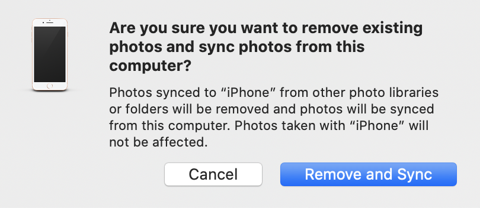
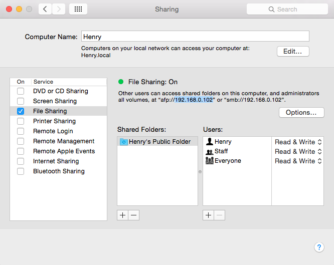

iOSFinder
The designedly Finder on iOS device.
iOSFinder is a Finder-like app on iOS device, it was renamed from iCodeEditor, it is an:
Universal file manager (File Explorer, i.e Finder on Mac). Universal file viewer (Reader for any kinds of files on iOS device). Universal source code editor (Powerful code editor designedly developed for iPad). Universal multimedia player (Crafted music player and video player for iPhone and iPad).

Why
-
Select file or folder on MacBook → transfer and then view files on iPhone, or
Select file or folder on iPhone → transfer and then view files on MacBook.
It's so intuitive and simple!
But, syncing mechanism made it so boring!
An iPhone can sync with only one computer at a time!
Transferring files between iPhone and MacBook always drive me angry! - It's convenient but not necessary to store everything on cloud, there is still existing many reasons
to store Office documents, photo, video and other files on private disk, computer or other storage devices
to prevent the data be illegally accessed, used or analysed.
Transferring files between Mac and iOS devices is always difficult and pain!
You can't feel free to transfer files as intuitive as moving files in Finder!
So, this app developed to help you manage files in your iOS devices just like on your MacBook!
The above video is very old, but demonstrate the app's features.
Fast share files between your Mac, Windows PC or Linux, Android and iOS devices
You can download all kinds of files from your Mac or PC and read them on your iOS devices. You can also upload any kinds of files to your Mac or PC from your iPhone or iPad. Browse eBooks and PDF files, read Office documents e.g. EXCEL, WORD and PowerPoint, view pictures by slipping your finger, listening musics like in iTunes and watching movies. Of course, the app can be emphasised using as a resource explorer like Finder on Mac. iOSFinder designed to be a P2P file share solution, you can directly move files between your desktop, server, mobile phone and iOS devices remotely.
Features
- Fast download or upload folders that holds large number of files. All sub-folder and files will be downloaded or uploaded automatically.
- Efficiently organise and manage folder and files. Add, delete and rename folder or file, fast translate them between Mac, Windows PC, Linux, Android and iOS devices. The FTP Server can be running on any common platforms, Mac, Windows, Linux, Unix, Android, PSP Game box and others.
- Read all kinds of files on your iOS devices conveniently.
- Automatically generate thumbnail for image and video, and different icon for different file types, e.g. pdf, office documents, audio, web files and any type of source code files.
Read & Review code on iPad
iOSFinder was renamed from iCodeEditor(another name is iPowerReader), means that it was originally developed to edit source code on iPad, in fact, yes, it actually a full featured code editor. This function was especially designed for anyone who wants to read or edit source code on iOS device.
- Syntax highlighting. Source code parser integrated and symbols indexed, such as module, class, function definition, variable declaration etc.
- Symbol browse and filter. Search symbols in folder that holds large number of files.
- Jump to symbol or jump to line. Accurate line location by line number or by the symbol definition.
- Live web page preview. Preview website design with the builtin web browser, so convenient!
- Read code or other files on iPhone is convenient and useful, but edit source code file on iPad will feel better.
The editor supports Syntax Highlighting for almost all popular programming languages, including but not limited:
Verilog, System Verilog, VHDL, MATLAB (with OO features), Asm (Assembler/Assembly language),
If you want a lightweight code editor on Mac, please refer another app developed by me: Speare code editor, the free small IDE for scripting languages.
FTP Server Settings
1. On Macintosh: System Preferences → Sharing → File Sharing, check the service and got the IP address of your machine, then you can input it in the settings of iOSFinder.

 Because macOS High Sierra removed the builtin FTP Server, there's an alternative solution:
Personal FTP Server, use the uFTP Server, your FTP settings of iOSFinder should be changed to: 192.168.1.4:2121, i.e. append a port number to the server IP address and sperate with a colon ":", for the example, the port number is 2121, then the appending string is ":2121", five characters.
Because macOS High Sierra removed the builtin FTP Server, there's an alternative solution:
Personal FTP Server, use the uFTP Server, your FTP settings of iOSFinder should be changed to: 192.168.1.4:2121, i.e. append a port number to the server IP address and sperate with a colon ":", for the example, the port number is 2121, then the appending string is ":2121", five characters.
2. On Windows:
- The Windows builtin FTP Server can be configured via IIS (Internet Information Services), please read this article and other articles about this subject on the website of Microsoft.
- Free and Open Source solution: FileZilla Server, highly commended.
- Cerberus FTP Server (Proprietary software).
- CrushFTP Server (Proprietary software).
3. On Android Mobile Phone: One of FTP Server app on Android phone.
Screenshots
Universal Finder-like file manager for iOS device. Fast file transfer between iOS device and Mac, Windows PC, Linux, Android phone and other platforms.
Home panel provides entries to manage local storage on iOS device and remote files on FTP server that running on Mac, Windows, Linux, Unix, Android, Game box and others.
Browse photos on iOS device by slipping finger.

Universal document viewer for iOS device. Above screenshot indicate read Microsoft's PowerPoint presentations on iPad, you can read any other type of documents, such as WORD, EXCEL and PDF etc.
Full featured code editor for iOS device. Read, review and edit source code on iOS device.
Full featured multimedia player for iOS device. Transfer your music and movie from other platforms on your iOS devices and enjoy them later.
New The built-in music player in the last updated version supports lyrics synchronising, playlist management, cycle loop or random playback. The player can synchronise lyrics sheet with music files, you just needs to put the lyrics sheet that has a .lrc extension together with the music file, i.e. the mp3 file and the .lrc file both must be put under the same folder and has a same file name.  LyricsMaker is a small util that designed to help making lyrics sheet for music files very easy.
LyricsMaker is a small util that designed to help making lyrics sheet for music files very easy.
About Apple App Store
Note: There's "gentleman" write some "good" review words on App Store about this app to mislead people, but I believe people can judge what they said by themselves.
Download the wonderful app from App Store:
References
- FTP server software on Wikipedia.
- List of FTP server software on Wikipedia.
- Code Review on Wikipedia.
- Code Reading on Wikipedia.